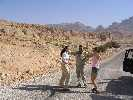
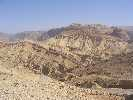
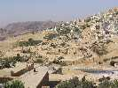

Jordánsko
Blízky východ
Jordánsko 2003
Dostala som neodolateľnú ponuku mojej kolegyne ísť do Jordánska na dovolenku namiesto jej mamy a tak som súhlasila. Leteli sme presne na Dušičky, do krajiny, ktorú v tom čase moc slovenskí turisti nenavštevovali. Hneď na letisku sme sa zoznámili s manželským párom, ktorému Zuzka najprv veľmi nedôverovala, skôr si myslela, že nás chcú uniesť, keď pristaneme J a zhodou okolností sme s nimi neskôr strávili celý týžden plný pohody J. Mali dobrú myšlienku, že namiesto leňošenia na pláži si zaplatíme výlet s domácimi po krajine. A tak sa aj stalo.
Ubytovaní sme boli v mestečku Aqaba. Pláž pre zahraničných bola z hotela dosť ďaleko, takže kto nestihol transport zdarma ráno busom, musel ísť taxikom. Pláž pre domácich ako sme sa na vlastné oči boli presvedčiť bola jedna smradľavá, špinavá pláž, kde sa ženy kúpali celé zahalené. Inak mestečko bolo kľudné, predavači prívetiví a chtiví predaja.
Ale ako som spomínala, s našimi už priateľmi sme sa teda rozhodli podniknúť cestu po krásach Jordánska. S „turistickým sprievodcom“ sme dohodli trasu a cenu pri vodnej fajke a výbornom čiernom čaji s mätou. Naplánovali sme len 3 dni, nakoľko náš celkový pobyt predstavoval len jeden krátky týždeň.
Ráno celí nedočkaví sme sa stretli s „turistickým sprievodcom“ a mali sme ísť na miesto, kde na nás malo čakať auto. No troška nám vyrazilo dych, do čoho nás vlastne naskladali, ale kedže panovala stále dobrá nálada, tak sme nenamietali.
Prezradím, že chlapi v Jordánsku fajčili bez prestávky a vôbec neboli ochotní tolerovať nás nefajčiarov. Takže sme si to vychutnávali aj s nimi, mne bolo zo zmesi cigaretového dymu a benzínového smradu zle, ale zabojovala som.
Najväčšie zhrozenie, ktoré som zažila bolo, kedď šofér tankoval a oblial sa benzínom. Takto si sadol do auta a veselo si zapálil!





Petra je mesto vytesané do červeno-ružovej skaly v mieste stretu troch údolí. Celé mesto je zapísané v zozname UNESCO.
Púšt Wadi Rum je miesto málo obývané, vyprahnuté a neskutočne krásne tiché. Boli sme sa tu povoziť na ťavách, pozrieť si západ slnka a dať si večeru s domácimi.
Mŕtve more – čítala som o ňom, že nadnáša, ale skutočný zážitok z vody bol oveľa lepší ako z kníh. A keďže sme veselé typy, tak sme sa dali do šaškovania a robili sme aquabely. Aj napriek varovaniu domácich, že máme byť opartní, som nohu zdvihla akosi viac a prevrátila som sa dozadu. Voda mi prešla cez celé dýchacie ústrojenstvo a domáci ma museli vytiahnuť na breh k sladkej vode, lebo som myslela, že sa zadusím a že sa mi spálila sliznica v nose. No po čase to ustalo a som sa vrátila do vody. Pri vode sa dajú nájsť miesta, z ktorých sa ľahko získava bahno na natieranie tela, tak sme to aj poriadne využili.
Hora Nebo – z nej údajne Mojžiš zazrel zasľúbenú zem a na tomto vrchu aj zomrel neskôr. Na vrchole je kríž, na ktorom bol údajne ukrižovaný Ježiš. Vstup tu bol povelený len zahaleným a keďže sme poniektorí mali kraťsy, tak sme sa zabalili do uterákov J.
Stalo sa mi to v živote prvý krát, keď som na tejto hore usadla do lavice kostola a z očí sa mi spustili nekontrolovane slzy. Niečo bolo v priestore, niečo neidentifikovateľné...
Zastvavili sme sa aj na pevnosti Ajlun, prespali v mestečku mozajok Madaba, pobudli v prírodných termálnych kúpeľoch.


Loď, šnorchlovanie– ku koncu výletu sme mali denný pobyt na pláži, kam sme sa prepravili loďou, obed a cestu späť loďou. Ale vietor nám na ceste späť neprial, pretože krátku vzdialenosť sme prekonávali na vysokých vlnách (autom sa to dalo zdolať asi za 20 minút) a po vystúpení sme boli uplne zelené. Inak more je tam užasné, plné farebného tvorstva.


Lenka
Pôvodná stránka: archív horecsport.sk